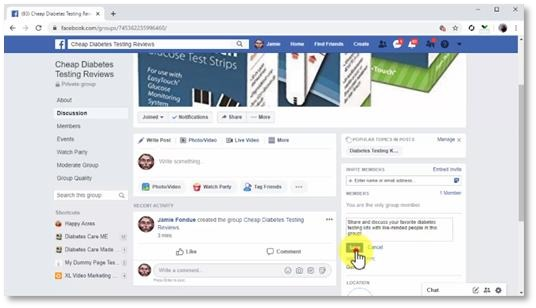

Chapter 5:
Creating A Targeted Facebook Group

One thing you’ll notice this far into the training is that our main objective has been to increase engagement and to create more and more ways to drive interactions and conversations with Facebook users. The reason for this is that the objective at this point in your Facebook Marketing journey is to find as many users whom to build a relationship with so you can qualify them as customers later on. One of the best ways to find leads in your niche and spark meaningful conversations with them is by creating a group that is targeted at their interests and behaviours, and in this lesson we are going to show you how to create one of your own, the easy way.
Getting Started
Ok, so what you’ll do first is to sign into your Facebook account. Next, you are going to click on the “create” tab in the top bar menu, and then you are going to click on the “group” option. Creating A Group Now you are going to add the info to personalize your group. Start by entering the name of your group into the “name your group” field. Now, the name of your group doesn’t need to be the name of your brand or business, because you already have a page for that. Instead, the best strategy is to use a name that targets the interest, needs, or behaviours of your potential customers.
You can for example, use the keywords or search terms that describe the problem that your products solve, or the category of your products or services. In this example, we are going to create a group for people looking for cheap products in our niche, so we’ll start the name with the word “cheap”, followed by the category name of the product. This way, we are going to use a high-traffic search name as the name of our group. Next, you are going to add the email addresses or Facebook usernames of people that you’d like to invite to join the group. This is step is optional, but you can use it in case that you are creating a private group, or when you are given permission by your followers to send them invites and notifications. Now you are going to select the group “privacy”. Here we recommend you set it as “private”. While this can lower the number of people that join the group initially, you’ll be avoiding spammers and bots lowering the quality of your group. By creating a private group, you are going to be able to approve who joins the group, and what type of content goes there. By demanding that users ask for approval, you will be able to qualify who is really interested in the content because approval request works as double opt-in. Now select “visible” in the menu below to make your group visible to everybody in the results page and click on the “create” button.
Customizing a Group
Now it is time to customize the group. Start by clicking on the “upload photo” to add a cover image to the group. Now you are going to click on “create topic” to add your topic keyword. Now you are going to click on “add a description” to add a description for your group. This is the description that users will see in the results page. And now that you have created your group, you are going to be able to create posts, to publish images, videos, and to share curated content. Remember that the content and media that you share on this group has to be targeted content, not branded content. Share content that encourages members to discuss and share their own experiences, to give recommendations, and so on.
The more you engage with group members, the more you’ll grow your authority. This is because, instead of promoting your own stuff like you would do in your page, you are going to share content to show your expertise, regardless of source. Let’s show you a quick example. We are going to post a video about a topic that matters to our audience. So, we will start by composing the post into the text box. Because this isn’t a marketing post, we are going to use a more conversational tone, and we are going to compose a larger message. Next, we are going to click on “photo/video”, and then on “upload photos/video” to upload the video directly to the post. Then we are going to click on “post”. And this it! You just created an awesome group for your would-be customers, and all you have to do is to publish engaging posts every day to keep your group alive!